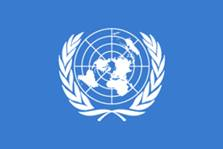
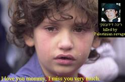
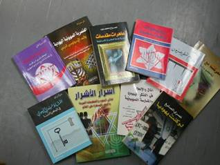

"Roadmap" voor de vrede?
Door: Franklin ter Horst.
(Aangemaakt: 5 april 2003) ( Laatste bewerking: 24 november 2016)
De wereldgemeenschap gaat onverkort door het PLO-bewind te belonen met een onafhankelijke staat in de Bijbelse gebieden Judea en Samaria met het oostelijk deel van Jeruzalem als hoofdstad. Het "Kwartet van Vier" de Verenigde Staten, Rusland, Europese Unie en de Verenigde Naties noemen deze diefstal de Roadmap (routekaart) naar vrede in het Midden-Oosten. De wereldleiders eisen van Israël dat het land opgeeft dat al méér dan 3000 jaar haar eigendom is. Deze eis getuigd van een schaamteloze arrogantie en minachting tegenover de bijbelse God die dit land voor eeuwig aan de kinderen van Israël gegeven heeft.
Tijdens een verkiezingscampagne in mei 2000 beloofde de voormalige Amerikaanse president George W. Bush nog dat hij Israël nooit een oplossing zou opdringen in het conflikt met het bewind van terreurmiljardair Jasser Arafat. Na zijn ontmoeting met Israëls voormalige premier Ariel Sjaron in het Witte Huis in Washington, op 20 maart 2001 herhaalde hij dit standpunt nog eens. Maar nauwelijks in functie veranderde hij zijn standpunt. Steeds opnieuw vond hij de tijd om de installatie van een PLO-staat te propageren in het hart van Israëls thuisland. Reeds op 24 juni 2001 presenteerde hij zijn ‘twee staten’ plan ,,Israël en Palestina, levend zij aan zij, in vrede en veiligheid.”Hij ging zelfs zo ver door de Bijbelse gebieden Samaria en Judea, ‘bezette gebieden’ te noemen. De Bijbel noemt Juda of Judea maar liefst 877 keer en Samaria 123 keer. Het is het Heilige land, Gods land dat als eeuwige erfenis is gegeven aan de nakomelingen van Abraham, Isaäk en Jakob.
Het land dat door de “Bende van Ramallah” wordt opgeëist, is nooit een separate Arabische natie geweest, noch historisch, taalkundig, politiek of op wat voor manier dan ook. Toch wordt Israël als illegale bezetter gekarakteriseerd. Maar Israël beantwoordt op geen enkele manier aan de defenitie van een bezettingsmacht omdat het land in kwestie al meer dan 3000 jaar haar eigendom is. Hun recht op aanwezigheid is niet alleen van Bijbelse aard maar is zelfs volkenrechtelijk erkend. Men zou zich kunnen afvragen of de mandaat verklaring vandaag nog geldigheid heeft, daar de Volkenbond niet meer bestaat. Maar de Verenigde Naties hebben de geldigheid van alle mandaatobligaties, bevestigd door deze in haar eigen charta (handvest) over te nemen, speciaal in artikel 80. De Joodse rechten op ‘nederzettingen’zijn daarom zowel door de Volkenbond als ook door de VN gegarandeerd. De Joodse rechten staan wettelijk vast. Alle resoluties van de VN tegen Israël zijn derhalve in strijd met hun eigen handvest.
Vlag Verenigde Naties
De beschuldigingen aan het adres van Israël als bezettende macht zijn ongerechtvaardigd. Daarom is ook de Roadmap volkomen illegaal. Maar desondanks eist het kwartet van vier dat Israël zich volledig terugtrekt uit wat men de PLO-gebieden noemt.
Spreuken 1:22 Hoelang zult gij,
onverstandigen, het onverstand liefhebben, zullen spotters aan spotternij een
welgevallen hebben, en dwazen de kennis haten?
Israël is door de jaren geconfronteerd met een groot aantal plannen waar onder, het Rogers Plan, het Vance plan, het Reagen Plan, het Clinton Plan, het Mitchell Plan, het Tenet Plan, het Saoedi Plan en vandaag het Bush Plan. Allemaal plannen waarin van Israël wordt geëist dat het delen van haar thuisland opgeeft ten gunste van een PLO-terreurstaat. Plannen die alleen maar hebben geleidt tot meer geweld van de kant van Arafat en consorten en thans leiding van Abu Mazen (Mahmoud Abbas). Deze gewelddadige cultuur zijn bittere vijanden van het Joodse volk en zullen nooit instemmen met een definitieve vredesregeling. De Roadmap is niets anders dan een enkele reis naar rampspoed.Van de reeks bestuurshervormingen die de Routekaart eist is nooit iets terecht gekomen en al evenmin met het ontwapenen van de terreurbendes.
De PLO heeft nooit afstand genomen van haar voornemen om een einde te maken aan de staat Israel. Op 8 juni 1974 nam het PNC (Palestinian National Council) in Caïro het zogenaamde "Fasenplan" aan. Deze video werd geproduceerd en verspreid door www.FreeMiddleEast.com. Arafat oogstte al snel succes want in oktober 1974 werd op de Arabische topconferentie in Rabat de PLO door de Arabische staten unaniem erkend. In het fasenplan werd dat in 1988 nogmaals werd bekrachtigd en verder ontwikkeld, werd het proces omschreven dat met steun van andere landen geheel ‘Palestina’ bevrijd zou moeten worden. Een van de doelen was de internationale wereld te mobiliseren teneinde druk op Israël uit te oefenen de aloude Bijbelse gebieden aan het PLO-bewind de over te dragen. Op 9 april 2008 werd duidelijk dat het plan nog altijd actueel is. PLO-vertegenwoordiger in Libanon, Abbas Zaki, gaf toen een persbericht uit waarin hij het volgende schreef: ,,De PLO heeft haar platform geen jota veranderd… De PLO gaat voort in fases… Met de hulp van Allah zullen we hen (Israel) uit Palestina verdrijven.” Zaki zegt een groot voorstander te zijn van terreur tegen Israël. ,,Wij praten politiek, maar onze principes zijn duidelijk”. Het was onze pionierleider Jasser Arafat die met de revolutie is begonnen. Onze gewapende strijd (lees terreur) duurt nu al 43 jaar en onze strategie is na al die jaren nog steeds ongewijzigd. Israël zal uiteindelijk de prijs betalen.
Abbas Zaki
Maar ook het Fatah congres in Bethlehem 2009 riep op tot de voortzetting van de strijd totdat het ‘thuisland’ bevrijd is. Het streven naar een eigen staat zonder akkoord en zonder vrede met Israel kan alleen op deze wijze begrepen worden. Het is duidelijk dat de unilaterale PLO-staat staat onder de huidige omstandigheden vrede uitsluit en oorlog naderbij brengt.
Een merendeel van de Arabieren wil dat hun eigen door de Amerikanen opgeleide troepen, grondgebied van Israël bezetten, inclusief het oostelijk deel van Jeruzalem. Hoewel het contraproductief lijkt wanneer het PLO-bewind hun diplomatieke inspanningen bederven met uitbarstingen van geweld, heeft die strategie tot nu toe goed gewerkt. Bij elke uitbraak van geweld tot op heden is alleen de internationale druk op Israël toegenomen om aan de eisen van de PLO te voldoen. Uit alles wordt duidelijk dat het PLO-bewind geen Joodse staat naast zich wil maar heel het gebied tussen de rivier de Jordaan en de Middellandse zee.
Er is een oorlog gaande om het Bijbelse
land.
Alle wereldbewoners hebben hun rechten, maar de joden zijn daarvan kennelijk uitgezonderd. Israël moet accepteren dat haar burgers dagelijks worden bestookt met raketten afkomstig van PLO-terreurgroepen. Israël moet accepteren dat op de PLO-tv openlijk wordt opgeroepen tot het uitmoorden van de Joden en tot het vernietigen van de staat Israël. De pro-PLO lobby is niet geïnteresseerd in feitenkennis en historische waarheden, haat is het enige wat hen drijft en daarbij is ieder leugen welkom. Het is antisemitisme in haar ergste vorm. Het plan om de “Bende van Ramallah” een eigen staat te geven in het hart van het beloofde Land zal Israël geen vrede brengen, net zo min als de Oslo-akkoorden dat hebben gedaan. Deze akkoorden waren een fundamentele vergissing en zo zal het ook gaan met de Roadmap.Het zal Israël alleen nog maar meer ellende brengen. Het is onvoorstelbaar dat de voormalige misdadiger Jasser Arafat en zijn kliek jarenlang ongestoord hun terreur konden blijven uitvoeren. Vandaag worden al hun misdaden, de moord op honderden Joden en de duizenden die voor hun leven verminkt zijn, door het "Kwartet van Vier" beloond met een gesponsorde mini- (terreurstaat).
Een meisje wiens moeder door een
PLO-terreurbende is vermoord.
De Arabieren willen geen vrede en zijn ook niet van plan dat te maken. De claim van de Arabieren dat het hele land, van de rivier de Jordaan tot de Middellandse zee van hen is, is een historische leugen. Dat gebied behoort aan Israël. Heeft ooit in de geschiedenis een staat delen van hun rechtmatig bezit weggeven aan schaamteloze terroristen die nog steeds weigeren Israël’s recht op bestaan te erkennen? Hoe kunnen de leiders van EuroBabel en de VS voorstander zijn van een staat wiens mensen hun leven hebben gewijd aan het vermoorden van onschuldige Israëlische burgers? De Arabieren voeren al tientallen jaren een meedogenloze, brute en genadeloze terreur en haat tegen het Joodse volk.
De Joden die zich in de Bijbelse gebieden Samaria, Judea hebben gevestigd, staan volkomen in hun recht en dat was eveneens van toepassing op de 8000 Joden die in 2005, onder druk van Washington en Brussel, uit hun huizen in Gaza zijn verdreven. Het is hun land, voor eeuwig gekregen van de God van Abraham, Isaak en Jakob. De Bijbel noemt ook Gaza een door God gegeven erfdeel aan de kinderen van Israël.
Jozua 15:20-47 Dit nu is het erfdeel
van de stam der Judeeërs naar hun geslachten…Asdod en zijn onderhorige plaatsen
en dorpen, Gaza en zijn onderhorige plaatsen en dorpen, tot aan de Beek van
Egypte, de Grote zee en de kust.
Richteren 1:18 Verder nam Juda Gaza
met zijn gebied, Askelon met zijn gebied en Ekron met zijn gebied.
Iedere poging om hen uit het aloude vaderland te verjagen is een opstand tegen Gods bevel. Er is een oorlog aan de gang om het Bijbelse land, om Jeruzalem, om de Tempelberg. De PLO-terreurdaden worden door de wereld als verzetsdaden gezien en het PLO-bewind als naar vrede snakkende slachtoffers. De Joden worden gezien als terroristen die alle ellende hebben veroorzaakt. De wereld maakt een grote vergissing te denken de grenzen van het Beloofde land te kunnen veranderen. Niets is voor Israël zo erg als een PLO- terreurstaat aan haar grenzen. Het is onbegrijpelijk dat de wereld zich inspant om dit duivelse plan ten uitvoer te brengen. Deze wereld die de immorele Arabische moordenaars ongestraft hun misdaden laat uitvoeren.Wat zijn het voor wereldleiders die deze van de duivel bezeten kindermoordenaars zowel politiek als financieel ondersteunen?
Wat mag er verwacht worden van een PLO-staat waar een complete generatie jongeren is gehersenspoeld en geïndoctrineerd met haat tegen alles wat met Israël te maken heeft?
Haatboeken
Wat mag er verwacht worden van een ‘staat’ waar duizenden van de duivel bezeten terroristen klaar staan om zichzelf naar het ‘paradijs’ te blazen temidden van onschuldige Israëlische burgers. Wat mag er verwacht worden van een ‘staat’ waar Israëlische militairen worden gelyncht onder het oog van zogenaamde ‘politieagenten’ die de orde moeten bewaren en van waaruit overlevenden van de holocaust worden vermoord en hele families in bussen en restaurants de dood vinden? Wat is het voor een ‘volk’ dat baby’s op speelplaatsen en kleine kinderen in hun bedjes met kogels doorzeven? Wat mag er verwacht worden van een ‘staat’ waar meer dan de helft van de bevolking deze weerzinwekkende terreur ondersteund? De ministers van Buitenlandse zaken van de Europese Unie willen dat bij een vredesakkoord tussen Israël en het PLO-bewind, Jeruzalem zowel de hoofdstad van Israël als van een toekomstige PLO-staat moet zijn. Dat is op 8 december 2009 besloten naar aanleiding van een voorstel van Zweden. Brussel wil de heropening van alle PLO-instituten in Jeruzalem zoals in de Roadmap is vastgelegd. Maar deze Roadmap is al lang ter ziele omdat het PLO-bewind alle daarin gemaakte afspraken bewezen heeft geschonden. Het is nauwelijks te geloven dat men de leiders die verantwoordelijk zijn voor al deze terreur, wil belonen met een eigen staat op het grondgebied van een ander. Wat een satanisch plan!
33° Vrijmetselaar Tony Blair, heeft besloten de functie van speciaal vredesbemiddelaar voor het Midden-Oosten voor het "Kwartet van Vier" de Verenigde Staten, Rusland, Europese Unie en de Verenigde Naties, te willen beëindigen. Dat heeft hij op 27 mei 2015 aan de ‘grote baas’ van de VN Ban Ki-moon, laten weten. Blair heeft helemaal niets bijgedragen aan het vredesproces. Tijdens zijn termijn vonden drie oorlogen plaats tussen Israël en de terreurbeweging Hamas in Gaza. Maar Blair vond het kennelijk allemaal prima. Hij combineerde deze functie met werkzaamheden voor zijn consultancybedrijf, zoals de verkoop van advies aan allerlei regeringen en grote bedrijven. Zo zou hij in de Arabische wereld voor miljoenen aan opdrachten hebben binnengehaald. Blair was als premier van Groot-Brittannië van 1997 tot 2007 een van de grootste voorstanders van de oorlog in Irak. Volgens de onafhankelijke website icasualties.org zijn 179 Britten in Irak omgekomen iets wat Blair bijzonder kwalijk wordt genomen. Daarnaast wordt Blair ervan beschuldigd mede verantwoordelijk te zijn voor de honderdduizenden doden in Irak en dat hij voor deze misdaden voor een oorlogstribunaal zou moeten verschijnen. Desondanks zegt hij geen spijt te hebben van zijn besluit deze oorlog te beginnen. “Wat ik wel kan zeggen is dat ik nooit had verwacht wat voor nachtmerrie het zou worden".Hij werd eerder al opgeroepen er als vredesgezant mee op te houden.
Als vertegenwoordiger voor “Het Kwartet van Vier” keerde hij zich onder meer regelmatig tegen Israëls bouwplannen in delen van Jeruzalem. Op 28 september 2011 liet hij zich negatief uit over de Israëlische plannen om de wijk Gilo in Jeruzalem met 1100 nieuwe woningen uit te breiden. Blair vond dat alle partijen zich dienden te ,,onthouden van provocatieve acties.” Hij had niet eens door met zijn uitspraken zèlf al een provocatieve daad te stellen. Het Kwartet had trouwens al van meet af aan elke zin voor realiteit verloren. Een Israëlisch antwoord op de provocatie van Blair liet niet lang op zich wachten. Premier Benjamin Netanjahoe verwierp onmiddellijk de klachten omtrent de bouwplannen in Jeruzalem. ,,Gilo is geen nederzetting en ook geen outpost. Wij plannen in Jeruzalem. Wij bouwen in Jeruzalem. Punt uit!” De Verenigde Staten, Europa en de Arabische staten zeiden dat de bekendmaking (van goedkeuring van de bouwplannen in Gilo) de inspanningen om de vresdesonderhandelingen weer op te starten, zullen compliceren en de crisis met het PLO-bewind zullen verergeren.
Op 29 september 2011 liet Hillary Clinton ook weer van zich horen, suggererend dat de bouwplannen in Gilo de vrede blokkeert. ,,Wij geloven dat de aankondiging door de regering van Israël, dat de bouw van woningen in Oost-Jeruzalem is goedgekeurd, onze inspanningen om rechtstreekse onderhandelingen tussen de partijen te hervatten, tegenwerkt”zei Clinton tegen verslaggevers. ,,We hebben lang aangedrongen bij beide partijen, om elke vorm van actie die het vertrouwen zouden kunnen ondermijnen te vermijden, waaronder, en misschien wel in het bijzonder, in Jeruzalem, elke handeling die door een van de partijen als provocerend kan worden beschouwd.” Dat Clinton wel snel commentaar heeft op Israël wegens de bouw van een aantal appartementen, maar niet consequent is om "elke vorm van actie die het vertrouwen zouden kunnen ondermijnen" te benoemen als het om het PLO-bewind gaat. Met de bouw van de woonwijk Gilo werd reeds zo’n 40 jaar geleden begonnen en op dit ogenblik wonen er ongeveer 40.000 mensen, voornamelijk Joden. Steeds opnieuw vinden de wereldleiders een argument om Israël de schuld te geven voor het uitblijven van een vredesakkoord.
Toen het
PLO-bewind op 10 augustus
Op vrijdag 23 september
2016 waren de afgevaardigden van de Verenigde Naties (Ban ki Moon) de Europese
Unie (Federica Mogherini, de Verenigde Staten (John Kerry) en Rusland (Lavrov)
weer eens bij elkaar en waren het unaniem met elkaar eens dat “de
Israëlische ‘nederzettingen’ een obstakel zijn voor de vrede.” Ze
hadden niets te melden over de oorlog in Syrië of de massale slachtpartijen van
de ISIS barbaren in Irak, nee, het Palestijns- Israëlisch conflict blijkt het
enige echte probleem voor het Kwartet. Het Kwartet dat nog steeds het al lang
begraven vredesproces tussen de “Bende van Ramallah” onder leiding van een
‘president’ (die al sinds 2009 geen president meer is), en Israël nieuw leven
tracht in te blazen, herhaalde
tegenover de internationale pers in New York: “Het Kwartet benadrukt haar
sterke oppositie tegen de voortgezette activiteit in de nederzettingen die een
obstakel zijn voor de vrede en drukt haar grote bezorgdheid uit over de versnelde
bouw en uitbreiding van de nederzettingen… die gestaag de levensvatbaarheid van
de tweestatenoplossing eroderen.”
Federica Mogherini
als vertegenwoordiger van de Europese Unie lid van het Kwartet van vier.
Het Kwartet
gaf in juli 2016 een
bericht vrij waarin het Israël opriep om te stoppen met de bouw van Joodse
woningen in Israëls aloude thuisland de Bijbelse gebieden Judea en Samaria en
riep tot grote verbazing van velen zelfs Mahmoud Abbas en zijn corrupte bende
op “om op te houden met het opruien
tot geweld en terreur.” Overigens is dit nagenoeg identiek aan wat
Barack Hussein Obama op 20 september 2016 zei in zijn toespraak tot de Algemene
Vergadering van de Verenigde Naties: “De Palestijnen moeten beslist
ophouden met het ophitsen tot terreur en Israël erkennen, maar Israël moet
begrijpen dat het niet permanent kan doorgaan met bouwen op Palestijnse grond.”
De wereld moet er rekening mee houden dat de Bijbelse God niet ongestraft zal toestaan dat men Israël haar erfdeel ontneemt. Alleen God weet hoe de dingen zich de komende tijd zullen ontwikkelen. Het Joodse volk heeft een eeuwig verbonden relatie met de Bijbelse God en daar kan de wereld niets aan veranderen. Ieder plan van de wereldleiders dat indruist tegen Gods bedoelingen zal onder een oordeel vallen. Terwijl de Amerikanen de wereld verlosten van het monster Saddam Hoessein, die onder meer levende mensen voedde aan wilde honden, eist datzelfde Amerika van Israël dat het land afstaat aan hetzelfde soort barbaren. De Bijbel zegt nadrukkelijk dat de Schepper van hemel en aarde het Heilige Land heeft uitgekozen als de plaats die Hij Zijn thuis noemt, waar Hij voor altijd wil wonen met Zijn volk. Wee diegenen die daar verandering in aan willen brengen. Over het bijbelse land val niet te onderhandelen.
Psalm 33:10-11-12 De Here verbreekt
de raad der volken, Hij verijdelt de gedachten der natiën; de raad des heren
houdt eeuwig stand, de gedachten zijns harten van geslacht tot geslacht.
Welzalig het volk, welks God de Here is, de natie, die Hij Zich ten erfdeel
koos.
Psalm 2:1-2-3-4-5 Waarom woelen de
volken en zinnen de natiën op ijdelheid? De koningen der aarde scharen zich in
slagorde en de machthebbers spannen samen tegen de Here en Zijn Gezafde: Laat
ons hun banden verscheuren en hun touwen van ons werpen! Die in de hemel
zetelt, lacht, de Here spot met hen. Dan spreekt Hij tot hen in Zijn toorn, en
verschrikt hen in zijn gramschap.
Overige
bronnen: Koenig’s International News, 21-11-2002 22-1-2003 1-5-2003 Women
in Green, 25-11-2002 en 28-2-2003. Arutz-7,22-11-2002 13-4-2003
29-4-2003 6-5-2003 International Christian Zionist Center, Jan Willem
van der Hoeven, 27-10-2002 en 24-2-2003. Cidi Israël nieuwsbrief, 20-2-2003 en 26-3-2003. Nai Newsletter Jeruzalem, 14-4-2003
30-4-2003 9-6-2003. Israelinsider,"A
Terug naar: Inhoud